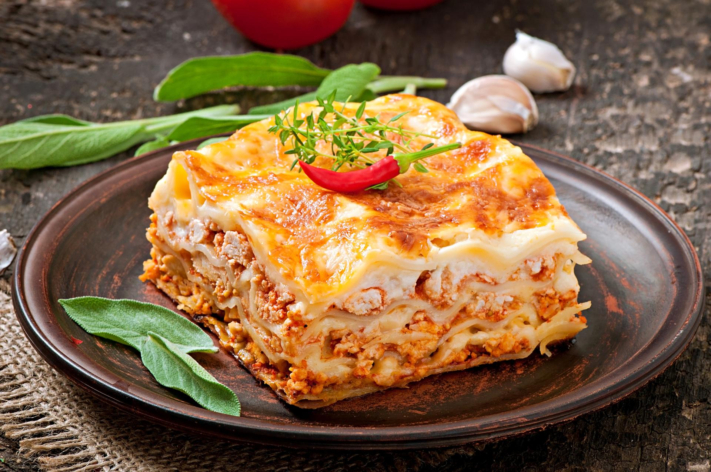

Home made Lasagne
Home

Description
Lasagne is a fantastic family dish serving many platefuls from relatively cheap ingredients and simple preparation.
Start by cooking beef, adding onion, celery and carrot finely diced till soft. Add tinned tomatoes, tomatoe puree and beef stock with slat and pepper to taste.
While this is simmering, in another saucepan, cook butter, flour and salt and pepepr to make a roux and add milk and cheese.
This will make a delicious creamy bechemel sauce once whisked until there are no more lumps.
Bring to a simmer, leave to thicken and prepare the layers by spooning the ragu in a thin, even layer, then layering on the lasagene sheets.
Then add a layer of evenly spready bechemel sauce. Repeat these layers in sequence until it is all used up.
End with a final layer of bechemel sauce and sprinkle cheese on top.
Ingredients
- Lasagne Pasta Sheets
- Beef Mince
- Onions
- Celery
- Carrots
- Garlic
- Salt and Pepper
- Beef Stock
- Tinned Tomatoes
- Tomatoe Puree
- Cheese (Ricotta, Mozerella and Cheddar/Pamersan)
Steps
- Preheat oven to 200 Degrees Celsius
- Heat pan of olive oil
- Fry beef till cooked
- Add diced carrots, onion and celery till softened
- Add garlic and cook for a few mins
- Add tinned tomatoes, tomatoe puree, stock and salt and pepper to season
- Simmer till reduced to a fairly thick consistency
- While simmering begin bechemel sauce in saucepan
- Add butter, flour and milk to make a loose roux
- Whisk until all lumps are gone
- Add ricotta and parmesan/cheddar and thicken
- Season with salt and pepper
- Spoon beef ragu mixture evenly into oven proof baking dish
- Layer lasagne sheets to cover evenly
- Spoon over bechemel sauce evenly
- Repeat layers until last layer is bechemel sauce
- Top with cheese (Mozerella or parmesan or cheddar)
- Bake in oven for 25 to 30 mins
- Remove from oven and leave to set for 15-20 mins
- Serve and enjoy, bon appetit!